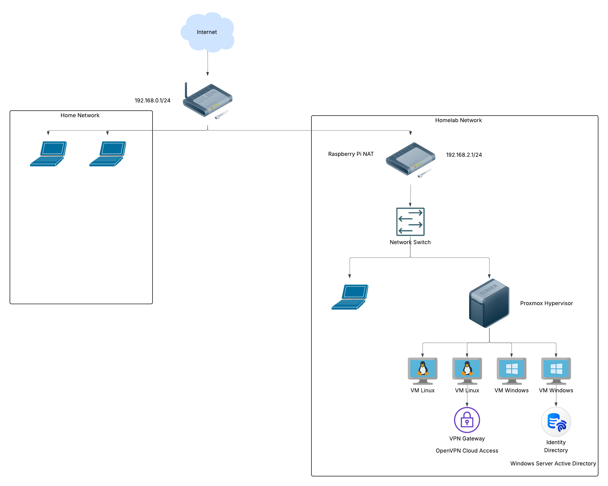

Home Lab Network Topology

Rasperry pi Server
- /etc/dhcpcd.conf
interface eth0
static ip_address=192.168.2.1/24
#static routers=102.168.2.1
metric = 200
- iptables adding NAT routing for rasberrypi github script here
Proxmox Hypervsior
- Hypervisor machine with multiple VM templates and OS to easily to deploy when needed.
- Ability to easily test security concepts and replace vms with ready to deploy templates.
Ubuntu Server VM machine 1
- Openvpn CloudConnexa vpn connection
- Allows ability to connect to homelab machines externally through public vpn domain hosted by openvpn
Kali Linux VM Machine 1
- Sandbox machine to securely and confidently practice security concepts.
- Built with template to easily recreate base system to confidently practice security concepts.
Windows Server 2022 VM Machine
- Hosts a custom windows active directory to host windows users and groups.
- Manage Windows Active Directory users and groups.
Windows 10 VM Machine
- Passthrough of Physical GPU to Windows VM
- Uses RDP to connect to machine
- Uses Moonlight to stream videogame/display content
- Device Manager showing Windows showing Physical GTX 950 graphics card
Memory Address 0x80000000-0x810FFFFF PCI-to-PCI Bridge
Memory Address 0x80000000-0x810FFFFF NVIDIA GeForce GTX 950
Memory Address 0x80000000-0x810FFFFF PCI Express Root Complex